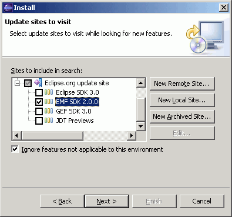
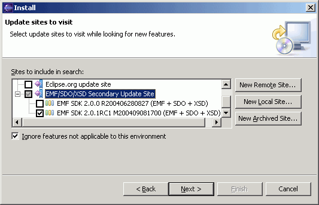
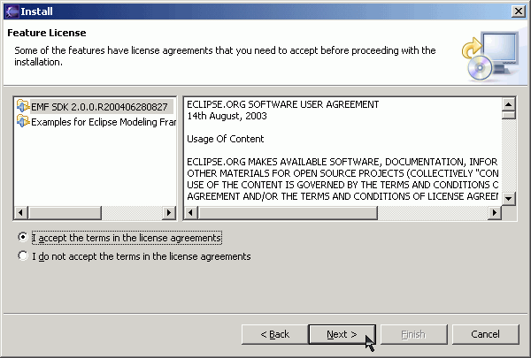

Summary
In this article you will learn how to update your Eclipse configuration using the Eclipse Update Manager.
Last update: June 13, 2005.
| Step 0: | Prerequisites |
| Step 1: | Updating Eclipse via Update Manager: Release Builds or non-Release Builds |
| Step 2: | Choose Features to Install |
| Step 3: | Accept Licenses, Choose Install Location, Begin Download |
| Step 4: | Verify Update |
IBM's implementation of the Service Data Objects (SDO) 1.0 specification is packaged with the Eclipse Modeling Framework (EMF) 2.0 and EMF 2.0.1 - however, 2.0.1 contains several bug fixes and improvements over 2.0.0, so it is recommended that you install the most recent version available. SDO is part of the EMF Eclipse Tools project.
XML Schema Infoset Model (XSD), an EMF subproject, is packaged in the EMF Software Development Kit (SDK), which provides support for modeling based on XML Schema documents. You need to install EMF 2.x to use SDO or XSD.
Make sure you read the installation requirements before you install EMF. Basically, you need to have Eclipse 3.1 or 3.0.1 and a Java Development Kit (JDK) or Java Runtime Environment (JRE) 1.4 installed before you install EMF, SDO, or XSD via Update Manager. (To run pre-compiled code, a JRE will suffice; if you intend to use Eclipse to compile code, a full JDK is required.)
When installing, you can choose from installing the SDK (includes everything - EMF, SDO, and XSD - but not the Examples) or can choose sources, docs, or runtimes separately. The minimum to run SDO is the EMF runtime and the SDO runtime. For XSD, you need XSD and EMF runtimes; for EMF, just the EMF runtime.
Once Eclipse is installed, launch it. Then select:
| Help | ||||
| > Software Updates | ||||
| > Find and Install... | ||||
| > Search for new features to install | ||||
To install a Release Build of EMF, SDO, or XSD, such as 2.0.0 or 2.0.1, simply pick the Eclipse.org update site, then expand the twisty to reveal the categories beneath. Choose the EMF SDK and version you would like to install.

Skip to Step 2.
To install a Maintenance, Integration or Stable build, choose the 'Eclipse Modeling Framework (EMF) Updates'.

If that site is not already listed, click 'New Remote Site' and enter the URL of the site (or one of its mirrors).
Note: the images below are taken from the installation of 2.0.0 Relase installed from the Eclipse Modeling Framework (EMF) Updates. If you're installing from the Eclipse.org update site, you will not see the 4th part of the version, that is, you will see 2.0.0 instead of 2.0.0.R200406280827. Note also that due to the way that Eclipse handles plugin versioning, to update from 2.0.0.I to 2.0.0, or 2.0.1.M to 2.0.1 is not possible. You cannot update from a 4-part version to its equivalent 3-part version, since Update Manager considers that 2.0.0 < 2.0.0.R. You can, however, upgrade from 2.0.0.R to 2.0.1.
So, to move from an I or M build to its Release, you must either uninstall/disable that version and install fresh, or update from 2.0.1.M to 2.0.1.R (not 2.0.1), keeping that 4th version part intact.
To verify your installation, you can perform the following steps.
| Help | ||||
| > Software Updates | ||||
| > Manage Configuration... | ||||
You can also check the plugins & features themselves:
| Help | ||||
| > About Eclipse Platform | ||||
Then, click the Plug-in Details button. Make sure the org.eclipse.emf.* plug-ins are at the 2.0.x level. The following six plug-ins relate to SDO:
If you installed XSD, don't forget about the Crimson DOM bug when running Eclipse.
Conclusion
In this article, we provided an overview of using Eclipse's Update Manager to install new EMF, SDO and XSD features into an existing Eclipse installation.